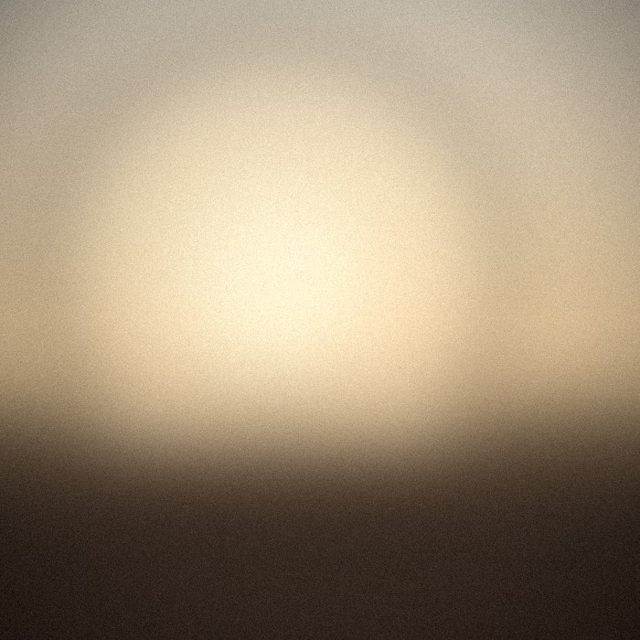

Фритрек и нулевой спринт: Подготовка к работе

Это было самое начало пути. На этом этапе важно было проникнуться основами и настроиться на учёбу. И, возможно, подумать, как новые знания могут повлиять на ваше будущее.
Я пришёл с большими ожиданиями и лёгким волнением: казалось, что нужно уметь почти всё и сразу. На деле главное было просто начать — остальное постепенно встало на свои места.